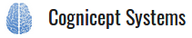

Operator Control Panel
Robot
w/s
to move forward and backward
a/d
to move left and right
PTU
j/k
to move the PTU down and up
h/l
to move the PTU left and right
o
to move the PTU to the default pose
3D map
Use your mouse to navigate the map
Robot camera
Description